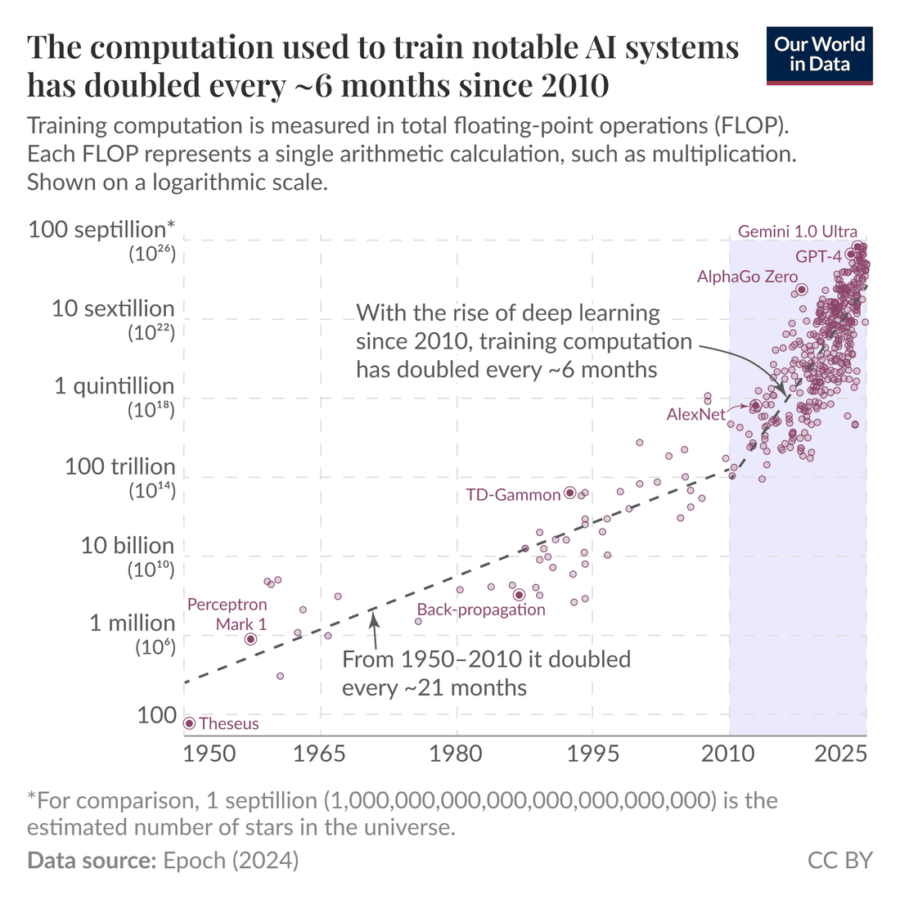
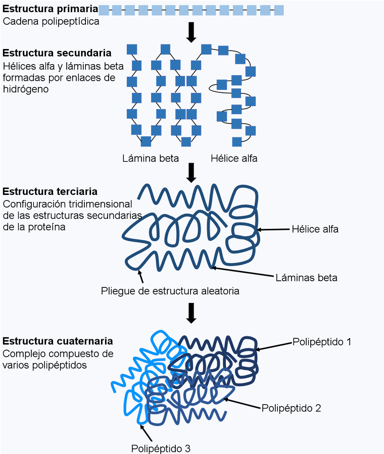

s010_maquina = {
const MODELOS = [
{nombre: "Transformer grande (2017)", flop: 2.3e19, fuente: "Vaswani et al., 2017, tabla 2"},
{nombre: "GPT-3 (2020)", flop: 3.14e23, fuente: "Brown et al., 2020"},
{nombre: "PaLM (2022)", flop: 2.56e24, fuente: "Chowdhery et al., 2022, tabla 22"},
{nombre: "Llama 3, 405 mil millones de parámetros (2024)", flop: 3.8e25, fuente: "Llama Team, 2024"},
];
const VEL = 1e13, MES = 30 * 86400;
let m = 0;
const raiz = html`<div></div>`;
const deslizador = html`<label class="sim-control"><span>portátiles trabajando a la vez</span><input type="range" min="0" max="7" step="0.25" value="0"><output></output></label>`;
const rango = deslizador.querySelector("input"), salida = deslizador.querySelector("output");
const lectura = html`<div class="sim-datos"></div>`;
const barra = html`<div style="height:0.8rem;border:1px solid var(--sim-regla);background:var(--sim-papel);margin:0.5rem 0"><div style="height:100%;background:var(--sim-acento)"></div></div>`;
const miles = x => Math.round(x).toString().replace(/\B(?=(\d{3})+(?!\d))/g, " ");
const duracion = seg => {
if (seg < 120) return `${seg.toFixed(0)} segundos`;
if (seg < 7200) return `${(seg / 60).toFixed(0)} minutos`;
if (seg < 3 * 86400) return `${(seg / 3600).toFixed(1)} horas`;
if (seg < 365 * 86400) return `${(seg / 86400).toFixed(0)} días`;
return `${miles(seg / (365.25 * 86400))} años`;
};
const pintar = () => {
const n = Math.round(Math.pow(10, +rango.value));
salida.value = miles(n);
const mod = MODELOS[m], seg = mod.flop / (VEL * n);
const necesarios = Math.ceil(mod.flop / (VEL * MES));
lectura.innerHTML = `<b>${mod.nombre}</b>: ${mod.flop.toExponential(2).replace("e+", " × 10^")} FLOP (${mod.fuente}).<br>
Con ${miles(n)} ${n === 1 ? "portátil" : "portátiles"}: <b>${duracion(seg)}</b>. Para terminar en un mes harían falta unos ${miles(necesarios)}.`;
barra.firstChild.style.width = `${Math.min(100, 100 * Math.log10(Math.max(1, seg)) / Math.log10(4e12))}%`;
};
rango.oninput = pintar;
const botones = html`<div class="sim-mem-botones"><span class="sim-mem-rot">Modelo:</span></div>`;
MODELOS.forEach((mod, i) => {
const b = html`<button type="button">${mod.nombre}</button>`;
b.onclick = () => { m = i; pintar(); };
botones.append(b);
});
const pruebe = html`<div class="sim-mem-botones"><span class="sim-mem-rot">Pruebe:</span></div>`;
for (const [texto, i, v] of [["El Transformer en un portátil", 0, 0], ["GPT-3 en un portátil", 1, 0], ["Llama 3 con diez mil portátiles", 3, 4]]) {
const b = html`<button type="button">${texto}</button>`;
b.onclick = () => { m = i; rango.value = v; pintar(); };
pruebe.append(b);
}
raiz.append(botones, pruebe, deslizador, barra, lectura);
pintar();
return raiz;
}0.1 Cronología verificada 2017–2026
Publicada el 6 de octubre de 2026 · revisada el 9 de octubre de 2026
En junio de 2017 un grupo de investigadores de Google publicó en arXiv, un repositorio abierto de artículos científicos, una nueva arquitectura para traducir textos. Nueve años después, sus descendientes manejan computadoras, escriben demostraciones matemáticas que un programa puede comprobar y se despliegan bajo leyes específicas para la inteligencia artificial. Este libro reconstruye ese recorrido con el detalle suficiente para entenderlo por dentro e implementarlo. Antes de entrar en cualquier mecanismo conviene tener el mapa completo: qué ocurrió, cuándo, quién lo hizo y por qué importó.
Esta sección es ese mapa. Recorre veinticinco hitos, desde el Transformer de 2017 hasta los sistemas de septiembre de 2026, y para cada uno indica en qué capítulo del libro se estudia a fondo. No hace falta entender aún cómo funciona cada sistema: aquí basta con saber qué aportó. Las explicaciones técnicas llegan en su momento, y cada vez que esta sección nombre un mecanismo dirá dónde se estudia.
0.1.1 Cómo leer esta cronología
Casi todos los sistemas de esta historia son modelos: funciones matemáticas con una enorme cantidad de números ajustables, llamados parámetros o pesos, cuyos valores se aprenden a partir de datos. Los modelos de este libro son casi siempre redes neuronales: funciones construidas encadenando muchas operaciones sencillas, sobre todo productos por matrices seguidos de funciones no lineales, cuyos coeficientes son los parámetros. La manera concreta de encadenar esas operaciones es la arquitectura del modelo: el plano de la función, antes de fijar sus números. Ajustar esos números es el entrenamiento, que se hace una vez y es muy costoso. Usar el modelo ya entrenado para responder a una entrada es la inferencia, que se repite cada vez que alguien lo consulta. La distinción aparecerá una y otra vez, porque buena parte de la historia reciente consiste en decidir dónde conviene invertir el cómputo, la cantidad total de operaciones aritméticas que exige una tarea: en entrenar mejor o en pensar más al responder.
Una cronología de este campo plantea tres dificultades que conviene tener presentes desde el principio.
La primera es qué fecha asignar. Un mismo trabajo suele tener varias: aparece como preprint (un artículo publicado antes de la revisión por pares), se anuncia en un blog, se presenta en un congreso meses después o se publica en una revista al año siguiente. Este libro usa siempre la fecha de la primera divulgación pública por parte de sus autores, porque es el momento en que la comunidad lo conoce y reacciona. AlphaFold 2, por ejemplo, se fecha en noviembre de 2020, cuando sus resultados se presentaron en la competición CASP14, aunque el artículo en Nature apareció en julio de 2021 (Jumper et al. 2021).
La segunda es qué se sabe realmente de cada sistema. A partir de 2023, muchos de los sistemas más influyentes son cerrados: sus empresas publican qué hacen, pero no cómo lo hacen. El reporte técnico de GPT-4, por ejemplo, declara expresamente que no incluye detalles de arquitectura, tamaño, hardware ni datos de entrenamiento (OpenAI 2023). Para no confundir conocimiento con conjetura, el libro distingue tres tipos de información:
- Publicado: lo confirma un documento de la propia organización (artículo, reporte técnico, ficha del sistema o anuncio oficial).
- Filtrado o no oficial: circula en análisis de terceros o en filtraciones, pero la organización no lo ha confirmado.
- No divulgado: la organización no lo ha hecho público.
El libro solo atribuye una técnica a un sistema cuando está publicada. Cuando un sistema cerrado probablemente usa algo que no ha confirmado, el libro enseña la técnica con trabajos abiertos y lo dice. Así, todo lo que se estudia aquí puede reproducirse y compararse con resultados publicados.
La tercera dificultad es más prosaica: las cifras. Casi toda la literatura está en inglés, que usa una escala numérica distinta de la del español. El billion inglés son mil millones (10^{9}), mientras que el billón español es un millón de millones (10^{12}). Del mismo modo, el trillion inglés (10^{12}) equivale a nuestro billón, no a nuestro trillón (10^{18}). Este libro escribe siempre las cifras en la escala del español: GPT-2 tenía 1 500 millones de parámetros y Llama 3 se entrenó con unos 15 billones de tokens, que son los fragmentos de texto (palabras o trozos de palabra) con los que trabajan los modelos de lenguaje. Las letras de los nombres de modelos se leen como en inglés: «8B» significa ocho mil millones de parámetros.
0.1.2 2017–2019: atención y preentrenamiento
A mediados de 2017, los mejores sistemas de traducción usaban redes recurrentes, que leen una frase palabra por palabra y van acumulando lo leído en una especie de memoria. Su problema no era la calidad sino la velocidad. Como cada paso depende del anterior, no se pueden procesar todas las palabras a la vez. Las GPU, los procesadores gráficos que se usan para entrenar redes neuronales, son rápidas precisamente porque hacen miles de operaciones en paralelo, así que una red recurrente desaprovecha la mayor parte de su capacidad. Los cuatro hitos de esta etapa resuelven ese cuello de botella y descubren qué hacer con el cómputo que liberan.
El Transformer (Vaswani et al. 2017), publicado por Google el 12 de junio de 2017, eliminó la recurrencia. En su lugar usa la atención, un mecanismo que permite a cada palabra consultar a todas las demás de la frase a la vez y decidir cuáles son relevantes para entenderla. Al no depender de un orden secuencial, todo se calcula en paralelo. El artículo mostró que esta arquitectura traducía mejor que las anteriores y se entrenaba en una fracción del tiempo. Casi todo lo que sigue en esta cronología está construido sobre ella. Se estudia en profundidad en El Transformer originaldentro de 12 capítulos.
Cuatro meses después, el 18 de octubre de 2017, DeepMind publicó AlphaGo Zero en Nature (Silver et al. 2017). Es un programa de Go que alcanzó un nivel sobrehumano aprendiendo solo por auto-juego: jugando millones de partidas contra sí mismo, sin ver ninguna partida humana. Combina una red neuronal, que evalúa posiciones y sugiere jugadas, con una búsqueda en árbol, que explora secuencias de jugadas futuras antes de decidir. Venció 100 a 0 a la versión que había derrotado al campeón Lee Sedol. «Sin conocimiento humano» no significa «sin reglas»: el programa conoce las reglas del Go y las usa para generar jugadas legales y decidir quién gana. Lo que no recibe es ningún consejo humano sobre cómo jugar bien. Por eso el método funciona en dominios donde existe un simulador exacto. Se estudia en Auto-juego: la familia AlphaZerodentro de 9 capítulos, sobre la base de Búsqueda clásica y teoría de juegosdentro de 7 capítulos.
El 11 de octubre de 2018, Google publicó BERT (Devlin et al. 2019). Introdujo el patrón que hoy sigue casi cualquier sistema de lenguaje: primero un preentrenamiento con enormes cantidades de texto sin etiquetar, en el que el modelo aprende a adivinar palabras ocultas; después un ajuste fino, que adapta el modelo completo a una tarea concreta con pocos ejemplos etiquetados. Con esa receta, BERT mejoró de golpe el mejor resultado publicado hasta entonces, lo que se llama el estado del arte, en once tareas de comprensión de texto. Se estudia en Paradigmas de preentrenamientodentro de 15 capítulos.
El 14 de febrero de 2019, OpenAI presentó GPT-2 (Radford et al. 2019), un modelo de lenguaje, es decir, un modelo entrenado para predecir la siguiente palabra de un texto. Tenía 1 500 millones de parámetros y se entrenó con unos 40 GB de texto de la web. Su sorpresa fue que, sin ajuste fino alguno, podía resumir, traducir o responder preguntas si se le pedía en lenguaje natural, algo que se llama comportamiento zero-shot (sin ejemplos). OpenAI publicó el modelo completo de forma escalonada, hasta noviembre de 2019, alegando riesgos de mal uso. Fue una de las primeras veces que una decisión de publicación se justificó por motivos de seguridad. Se estudia en Paradigmas de preentrenamientodentro de 15 capítulos.
| # | Hito | Fecha | Organización | Aportación | Se estudia en |
|---|---|---|---|---|---|
| 1 | Transformer | 12 jun 2017 | La atención sustituye a la recurrencia | Cap. 12 |
|
| 2 | AlphaGo Zero | 18 oct 2017 | DeepMind | Go sobrehumano solo por auto-juego | Cap. 9 |
| 3 | BERT | 11 oct 2018 | Preentrenamiento y ajuste fino | Cap. 15 |
|
| 4 | GPT-2 | 14 feb 2019 | OpenAI | Tareas resueltas sin ejemplos | Cap. 15 |
Al cerrar 2019 hay dos ingredientes sobre la mesa: una arquitectura que aprovecha el hardware paralelo y una forma de aprender de texto sin etiquetar. La pregunta siguiente era qué pasaría al hacerlo todo mucho más grande.
0.1.3 2020–2022: escala, ciencia y generación
La respuesta fue que el rendimiento mejora de forma predecible al aumentar el tamaño del modelo, la cantidad de datos y el cómputo de entrenamiento. Esa regularidad, conocida como leyes de escalamiento, convirtió el crecimiento en una inversión planificable y marcó estos tres años. A la vez surgieron dos frentes nuevos: la ciencia, con la predicción de la estructura de las proteínas, y la generación de imágenes a partir de texto.
La escala se mide sobre todo en cómputo de entrenamiento: el número total de operaciones aritméticas que hizo falta para entrenar el modelo. La Figura 1 lo muestra para los sistemas más notables desde 1950. En escala logarítmica, un crecimiento exponencial es una recta, y la pendiente cambia hacia 2010: desde entonces, el cómputo se ha duplicado aproximadamente cada seis meses, lo que en quince años supone multiplicarlo por unos mil millones. Esa curva es el telón de fondo de toda esta cronología.
Una máquina del tiempo del cómputo. Las cifras de cómputo de entrenamiento son tan grandes que conviene traducirlas a algo tangible. Un portátil con una buena tarjeta gráfica hace, en el mejor de los casos, unos 10^{13} operaciones por segundo (diez billones; la sección siguiente medirá cuántas hace el del laboratorio). La simulación siguiente divide el cómputo publicado de cuatro modelos de esta cronología entre esa velocidad.
Simulación 0.1.1
Qué representa cada mando. Los botones de modelo eligen uno de cuatro sistemas cuyo cómputo de entrenamiento publicaron sus autores, en FLOP (operaciones aritméticas). El deslizador portátiles dice cuántos portátiles como el descrito trabajan a la vez, de 1 a diez millones, en escala logarítmica; se supone que se reparten el trabajo sin pérdidas, algo que en la realidad nunca ocurre del todo (Entrenamiento distribuido y hardwaredentro de 19 capítulos). La lectura da el tiempo de entrenamiento y cuántos portátiles harían falta para terminar en un mes.
Tiempo de entrenamiento = cómputo publicado ÷ (portátiles × 10^{13} FLOP/s). La barra mide el tiempo en escala logarítmica, de un segundo a unos cien mil años.
Con El Transformer en un portátil sale menos de un mes: el modelo que abrió esta cronología podría entrenarse hoy en casa. GPT-3 en un portátil tardaría unos mil años, y Llama 3 necesitaría más de cien mil. Ni con diez mil portátiles bastaría un mes para Llama 3. Esa distancia, de seis órdenes de magnitud en siete años, es la escala de la que habla esta sub-sección, y explica por qué el libro reproduce los mecanismos en pequeño en lugar de los modelos completos.

El 28 de mayo de 2020, OpenAI publicó GPT-3 (Brown et al. 2020), un modelo de lenguaje de 175 mil millones de parámetros, más de cien veces mayor que GPT-2. Lo importante no fue el tamaño, sino lo que el tamaño hizo visible: el aprendizaje en contexto. Basta con escribir en la entrada unos pocos ejemplos de una tarea («inglés: cat, español: gato; inglés: dog, español: …») para que el modelo la resuelva. No se modifica ningún parámetro: el modelo usa los ejemplos como contexto para su predicción. Se estudia en Paradigmas de preentrenamientodentro de 15 capítulos, y los datos con los que se entrenan estos modelos, en Datos a escala webdentro de 16 capítulos.
El 30 de noviembre de 2020, DeepMind presentó los resultados de AlphaFold 2 en CASP14, la competición bienal de predicción de estructuras de proteínas. Las proteínas son cadenas de aminoácidos que se pliegan en formas tridimensionales, y esa forma determina su función. Determinarla en el laboratorio puede llevar meses o años. AlphaFold 2 la predijo a partir de la secuencia con una precisión comparable, en muchos casos, a la experimental. Su artículo y su código se publicaron en julio de 2021 (Jumper et al. 2021), y en 2024 el trabajo recibió el Premio Nobel de Química. Se estudia en Biología estructural computacionaldentro de 35 capítulos.

El 5 de enero de 2021, OpenAI presentó DALL-E (Ramesh et al. 2021), que genera imágenes a partir de descripciones en texto. Su idea central es tratar el texto y la imagen como una sola secuencia de tokens: la imagen se comprime antes en una cuadrícula de códigos, y un Transformer de 12 mil millones de parámetros aprende a continuar esa secuencia a partir del texto, igual que un modelo de lenguaje continúa una frase. Se estudia en Generación autorregresiva de imágenesdentro de 25 capítulos.
El 29 de junio de 2021, GitHub abrió la primera versión de Copilot, un asistente que completa código mientras se programa. Se basa en Codex, un modelo de lenguaje entrenado también con código público, cuyo artículo apareció una semana después (Chen et al. 2021). Ese artículo introdujo una forma de evaluar modelos de código que se volvió estándar: ejecutar el código generado contra pruebas automáticas y medir la probabilidad de acertar con k intentos, una métrica llamada pass@k. Se estudia en Modelos de códigodentro de 30 capítulos.
En 2022 coincidieron dos trabajos de Google que esta cronología agrupa en un solo hito. El 28 de enero, Wei y sus colaboradores mostraron que si se pide a un modelo grande que escriba los pasos intermedios de su razonamiento antes de responder, mejora mucho en problemas de aritmética y lógica. La técnica se llama cadena de pensamiento (Wei et al. 2022). El 4 de abril, Google presentó PaLM (Chowdhery et al. 2023), un modelo de 540 mil millones de parámetros entrenado en 6 144 procesadores especializados, que se convirtió en la demostración más llamativa de esa técnica. Juntos sugieren que la capacidad de razonar por pasos aparece con la escala y puede activarse con la forma de preguntar. Si esas capacidades aparecen de forma gradual o abrupta al crecer el modelo es todavía una cuestión debatida (Schaeffer et al. 2023). Se estudia en Razonamiento en modelos de lenguajedentro de 29 capítulos, y las técnicas para entrenar modelos de este tamaño, en Recetas de entrenamiento a gran escaladentro de 18 capítulos.
El 22 de agosto de 2022 se publicaron los pesos de Stable Diffusion, desarrollado por el grupo CompVis de la Universidad de Múnich con Runway y Stability AI (Rombach et al. 2022). Es un modelo de difusión: aprende a generar imágenes partiendo de ruido puro y eliminándolo paso a paso hasta que aparece una imagen coherente con el texto. Su innovación fue hacer ese proceso en un espacio latente, una versión comprimida de la imagen, lo que redujo tanto el costo que pudo ejecutarse en una GPU doméstica. Publicar los pesos llevó la generación de imágenes de los laboratorios a millones de personas. Se estudia en Difusión y flow matchingdentro de 26 capítulos.
| # | Hito | Fecha | Organización | Aportación | Se estudia en |
|---|---|---|---|---|---|
| 5 | GPT-3 | 28 may 2020 | OpenAI | Aprendizaje en contexto | Cap. 15, Cap. 16 |
| 6 | AlphaFold 2 | 30 nov 2020 | DeepMind | Estructura de proteínas desde la secuencia | Cap. 35 |
| 7 | DALL-E | 5 ene 2021 | OpenAI | Texto e imagen como una sola secuencia | Cap. 25 |
| 8 | Codex / Copilot | 29 jun 2021 | OpenAI, GitHub | Código evaluado ejecutándolo | Cap. 30 |
| 9 | Cadena de pensamiento y PaLM | 28 ene 2022 | Razonamiento por pasos a gran escala | Cap. 29, Cap. 18 | |
| 10 | Stable Diffusion | 22 ago 2022 | CompVis, Runway, Stability AI | Difusión en espacio latente, con pesos abiertos | Cap. 26 |
0.1.4 2022–2024: alineación, productos y pesos abiertos
Un modelo entrenado para predecir texto no es todavía un asistente. Continúa documentos en lugar de seguir instrucciones, puede generar contenido dañino con la misma fluidez que contenido útil y no sabe cuándo debe negarse. Conseguir que un modelo se comporte como se desea se llama alineación. Era un tema de investigación desde hacía años, y en noviembre de 2022 se convirtió en un problema de producto. En esta etapa los sistemas más influyentes son, cada vez más, cerrados, así que la distinción entre lo publicado y lo no divulgado importa más que nunca.
ChatGPT se lanzó el 30 de noviembre de 2022. Su receta pública es la de InstructGPT (Ouyang et al. 2022), que tiene tres pasos. Primero, un ajuste fino con ejemplos de buenas respuestas escritas por personas. Después, un modelo de recompensa, entrenado con comparaciones en las que personas indican cuál de dos respuestas prefieren. Por último, aprendizaje por refuerzo, una forma de aprender por ensayo y error en la que el modelo se ajusta para obtener respuestas que el modelo de recompensa puntúe alto. Ninguna de estas piezas era nueva; la novedad fue ponerlas en manos de millones de personas. Se estudia en Ajuste por instrucciones y alineación con preferenciasdentro de 28 capítulos.
El 14 de marzo de 2023, OpenAI presentó GPT-4 (OpenAI 2023), un modelo que acepta texto e imágenes y que alcanzó resultados comparables a los humanos en numerosos exámenes profesionales. Como se dijo, su reporte técnico no revela cómo está construido, y las cifras de tamaño que circulan sobre él proceden de filtraciones. Lo que sí publicó es valioso: el resultado final del entrenamiento se predijo con precisión a partir de modelos entrenados con entre mil y diez mil veces menos cómputo. Esa capacidad de prever el resultado antes de invertir en el entrenamiento completo es su aportación metodológica. Se estudia en Leyes de escalamientodentro de 17 capítulos.
El 15 de febrero de 2024, OpenAI presentó Sora con un reporte técnico (OpenAI 2024c). Genera video de hasta un minuto aplicando la idea de la difusión a pequeños bloques de video comprimido, que cubren a la vez un trozo de imagen y un intervalo de tiempo. El reporte describe la arquitectura solo a grandes rasgos y es franco sobre sus límites: muestra, por ejemplo, un vaso que se rompe de forma físicamente incorrecta. Las piezas que no se divulgaron se estudian con modelos abiertos en Difusión y flow matchingdentro de 26 capítulos.
El 4 de marzo de 2024, Anthropic presentó la familia Claude 3 (Anthropic 2024), en tres tamaños (Opus, Sonnet y Haiku). Destacó por su ventana de contexto de 200 000 tokens, es decir, la cantidad de texto que el modelo puede considerar de una vez (unas quinientas páginas), y por recuperar datos concretos dentro de ese contexto con más del 99 % de acierto. Su método de alineación publicado es la IA Constitucional, que sustituye parte de las valoraciones humanas por valoraciones de un modelo guiado por una lista explícita de principios. Se estudia en Ajuste por instrucciones y alineación con preferenciasdentro de 28 capítulos, y el trabajo con contextos largos, en Contexto largodentro de 21 capítulos.
El 18 de abril de 2024, Meta publicó Llama 3 con pesos abiertos, es decir, cualquiera puede descargar los parámetros del modelo, ejecutarlo e inspeccionarlo (Llama Team, AI @ Meta 2024). Los modelos, de 8 mil millones y 70 mil millones de parámetros, se entrenaron con unos 15 billones de tokens. El modelo pequeño vio así unos 1.5 \times 10^{13} / 8 \times 10^{9} \approx 1\,900 tokens por parámetro, muy por encima de los unos 20 que recomendaba el estudio Chinchilla (Hoffmann et al. 2022) para aprovechar al máximo un presupuesto de entrenamiento. No es una contradicción: Chinchilla minimiza el costo de entrenar, mientras que Llama 3 tiene en cuenta también el costo de usar el modelo millones de veces, y para eso conviene un modelo más pequeño entrenado durante más tiempo. Se estudia en Leyes de escalamientodentro de 17 capítulos.
El 8 de mayo de 2024, Google DeepMind e Isomorphic Labs publicaron AlphaFold 3 en Nature (Abramson et al. 2024). Amplía la predicción de estructuras de las proteínas aisladas a sus complejos con ADN, ARN, pequeñas moléculas (como los fármacos) e iones, y para ello genera directamente la posición de cada átomo con un modelo de difusión. Se estudia en Biología estructural computacionaldentro de 35 capítulos.
El 13 de mayo de 2024, OpenAI presentó GPT-4o (OpenAI 2024a), una sola red entrenada a la vez con texto, imágenes y audio. Hasta entonces, conversar por voz con un modelo exigía encadenar tres: uno que transcribía la voz, el modelo de lenguaje y otro que sintetizaba la respuesta, con esperas de entre 2.8 y 5.4 segundos. GPT-4o responde al audio en un mínimo de 232 milisegundos, con un promedio de 320, un tiempo de respuesta parecido al de una conversación humana. Cómo lo consigue por dentro no se ha divulgado; las técnicas equivalentes se estudian con modelos abiertos en Audio y multimodalidad nativa en tiempo realdentro de 27 capítulos.
| # | Hito | Fecha | Organización | Aportación | Se estudia en |
|---|---|---|---|---|---|
| 11 | ChatGPT | 30 nov 2022 | OpenAI | Asistente alineado con preferencias humanas | Cap. 28 |
| 12 | GPT-4 | 14 mar 2023 | OpenAI | Resultado del entrenamiento predicho de antemano | Cap. 17 |
| 13 | Sora | 15 feb 2024 | OpenAI | Difusión aplicada a video | Cap. 26 |
| 14 | Claude 3 | 4 mar 2024 | Anthropic | Contexto largo e IA Constitucional | Cap. 28, Cap. 21 |
| 15 | Llama 3 | 18 abr 2024 | Meta | Pesos abiertos y entrenamiento pensado para el uso | Cap. 17 |
| 16 | AlphaFold 3 | 8 may 2024 | Google DeepMind, Isomorphic Labs | Estructura de complejos biomoleculares | Cap. 35 |
| 17 | GPT-4o | 13 may 2024 | OpenAI | Voz, imagen y texto en una sola red | Cap. 27 |
0.1.5 2024–2026: razonamiento, agentes y ciencia
Hasta 2024, la manera principal de mejorar un modelo era invertir más cómputo en entrenarlo. La última etapa añade una segunda palanca: invertir cómputo al responder. El modelo razona extensamente antes de contestar, prueba alternativas o actúa sobre un entorno, por ejemplo usando herramientas o una computadora. Cuando un sistema hace esto último de forma autónoma y durante varios pasos, se le llama agente. Es también la etapa más reciente, y por tanto la menos asentada: varios de sus hitos no son un lanzamiento concreto sino tendencias, y algunos resultados estaban todavía en revisión al cerrar este libro.
El 12 de septiembre de 2024, OpenAI presentó o1 (OpenAI 2024b), entrenado con aprendizaje por refuerzo para producir una cadena de pensamiento antes de responder. Su rendimiento mejora tanto con más cómputo de entrenamiento como con más tiempo para pensar en cada respuesta, y fue el primer sistema de uso masivo presentado explícitamente así. El razonamiento queda oculto al usuario. OpenAI no ha publicado los detalles del método. Se estudia en Razonamiento en modelos de lenguajedentro de 29 capítulos.
El 20 de enero de 2025, la empresa china DeepSeek publicó DeepSeek-R1 con pesos abiertos (DeepSeek-AI 2025). Está construido sobre DeepSeek-V3, presentado el 26 de diciembre de 2024 (DeepSeek-AI 2024), un modelo de mezcla de expertos: tiene 671 mil millones de parámetros en total, pero para cada token solo activa 37 mil millones, repartidos entre subredes especializadas. La aportación de R1 fue mostrar abiertamente y con detalle lo que o1 no había documentado. Usó aprendizaje por refuerzo con recompensas verificables, es decir, tareas cuya respuesta un programa puede comprobar, como un problema de matemáticas con solución única o un código con pruebas. Con eso basta para que el modelo aprenda por sí mismo a razonar largo, retroceder y verificar sus pasos. El costo de la corrida final de entrenamiento de V3, unos 5.6 millones de dólares en horas de GPU, sorprendió a la industria por lo bajo. Se estudia en Razonamiento en modelos de lenguajedentro de 29 capítulos, y la arquitectura de V3, en El Transformer modernodentro de 13 capítulos.
El 18 de noviembre de 2025, Google DeepMind lanzó Gemini 3 (Google DeepMind 2025), que representa la consolidación de la IA agéntica: modelos pensados para encadenar razonamiento y uso de herramientas durante tareas largas. Su interfaz de programación, la forma en que otros programas lo usan, permite elegir cuánto debe pensar el modelo y conserva entre llamadas un estado de su razonamiento, para que pueda retomar el hilo al usar una herramienta. Los agentes, sus herramientas y los protocolos para conectarlas se estudian en Agentesdentro de 32 capítulos.
Los tres hitos siguientes no son lanzamientos sino líneas de trabajo. La IA física y soberana (2024–2026) reúne dos tendencias. Una es la llegada de los modelos de lenguaje a la robótica, con modelos que reciben imágenes e instrucciones y producen acciones. La otra es el despliegue de modelos en entornos propios, cerrados o desconectados, bajo marcos legales como el Reglamento Europeo de Inteligencia Artificial. Se estudian en Robótica y modelos de mundodentro de 36 capítulos y IA soberana, privacidad y despliegue segurodentro de 38 capítulos. La multimodalidad es el trabajo con varios tipos de datos a la vez: texto, imágenes, audio y video. Su segunda generación (febrero y marzo de 2026, con Gemini 3.1 Pro el 19 de febrero y GPT-5.4 el 5 de marzo) se caracteriza por el trabajo con video largo y en tiempo real y por arquitecturas que combinan la atención con otros mecanismos más eficientes para secuencias muy largas. Se estudia en Audio y multimodalidad nativa en tiempo realdentro de 27 capítulos y Modelos de espacio de estados y arquitecturas híbridasdentro de 14 capítulos. La relación entre IA y computación cuántica es todavía una promesa. Un editorial de Nature Biotechnology de julio de 2026 describe avances en métodos que combinan computadoras cuánticas y clásicas para simular moléculas («Quantum Computing in Transition» 2026), pero una revisión del mismo mes concluye que ningún problema farmacéutico real se ha resuelto aún con ellos («Quantum Computing in Drug Discovery» 2026). Se estudia en Computación cuántica y aprendizaje automático cuánticodentro de 37 capítulos.
El 1 de agosto de 2026, OpenAI publicó diez resultados matemáticos obtenidos por una versión interna de su sistema Astra, en problemas sin avances en al menos una década. Entre ellos están la construcción de un grupo no sófico (Fournier-Facio 2026), una pregunta abierta en teoría de grupos desde 1999, y nuevas cotas para el empaquetamiento de esferas en dimensiones altas. Todas las demostraciones, recogidas en un manuscrito de 249 páginas, están escritas en Lean 4, un lenguaje en el que un programa comprueba cada paso de una demostración, y ninguna deja pasos sin probar. Una auditoría humana posterior subrayó que comprobar que una demostración formal es correcta no basta: también hay que comprobar que los enunciados formales dicen lo que se pretende (Auditoría humana de las pruebas de Astra 2026). El 8 de septiembre, OpenAI anunció por separado un resultado sobre las ecuaciones de Navier–Stokes, que describen el movimiento de los fluidos: la construcción de una solución que deja de ser suave en tiempo finito cuando sobre el fluido actúa una fuerza externa. Lo obtuvo un sistema de unos diez mil agentes coordinados durante 88 horas. Como la formulación oficial del problema del milenio del Instituto Clay admite una fuerza externa en este tipo de enunciado, el resultado, si se confirma, lo resolvería en sentido negativo; la pregunta para un fluido sin fuerza externa seguiría abierta. A finales de septiembre de 2026 el resultado no estaba verificado de forma independiente y existía una disputa de prioridad con un trabajo de Buckmaster y Alpöge aparecido poco antes. Se estudia en Matemática formal y demostración automáticadentro de 31 capítulos.
El 3 de septiembre de 2026, OpenAI lanzó GPT-6 Astra (OpenAI 2026), con una ventana de contexto de 1 050 000 tokens, hasta 128 000 tokens de respuesta y una orientación explícita a operar computadoras y a tareas largas. Fue el primer modelo de OpenAI clasificado en su máximo nivel de riesgo en ciberseguridad, por lo que al principio solo se ofreció mediante programas de acceso controlado. Su sucesor, GPT-6.1 Sol, apareció el 29 de septiembre. Su arquitectura no se ha divulgado. El uso de computadoras por agentes se estudia en Agentesdentro de 32 capítulos, y los marcos de evaluación de riesgos, en Interpretabilidad, evaluación y seguridaddentro de 33 capítulos.
| # | Hito | Fecha | Organización | Aportación | Se estudia en |
|---|---|---|---|---|---|
| 18 | o1 | 12 sep 2024 | OpenAI | Pensar más al responder mejora el resultado | Cap. 29 |
| 19 | DeepSeek-R1 | 20 ene 2025 | DeepSeek | Razonamiento aprendido con recompensas verificables, en abierto | Cap. 29, Cap. 13 |
| 20 | Gemini 3 | 18 nov 2025 | Google DeepMind | Modelos diseñados para agentes | Cap. 32 |
| 21 | IA física y soberana | 2024–2026 | Varias | Robótica con modelos de lenguaje y despliegue propio | Cap. 36, Cap. 38 |
| 22 | Multimodalidad de 2.ª generación | feb–mar 2026 | Varias | Video largo y arquitecturas híbridas | Cap. 27, Cap. 14 |
| 23 | IA y computación cuántica | 2026 | Varias | Simulación molecular híbrida, aún sin ventaja práctica | Cap. 37 |
| 24 | Astra y las matemáticas | 1 ago 2026 | OpenAI | Resultados de investigación verificados en Lean 4 | Cap. 31 |
| 25 | GPT-6 Astra | 3 sep 2026 | OpenAI | Un millón de tokens de contexto y uso de computadoras | Cap. 32, Cap. 33 |
0.1.6 Cuatro ideas que conectan los hitos
Una lista ordenada por fechas responde a cuándo, pero no a por qué entonces. Para eso hay que ver qué idea hizo posible cada hito. Casi toda la historia de 2017–2026 se explica con cuatro ideas que se van acumulando: ninguna sustituye a la anterior, todas se suman.
- Atención: arquitecturas construidas sobre el mecanismo del Transformer, que procesan toda la secuencia en paralelo (El Transformer originaldentro de 12 capítulos).
- Escala: modelos preentrenados con cantidades crecientes de datos y cómputo, cuyo rendimiento mejora de forma predecible (Leyes de escalamientodentro de 17 capítulos).
- Alineación: ajuste posterior al preentrenamiento para que el modelo siga instrucciones y respete preferencias humanas (Ajuste por instrucciones y alineación con preferenciasdentro de 28 capítulos).
- Razonamiento y agentes: cómputo invertido al responder, aprendizaje con recompensas verificables y acción sobre un entorno (Razonamiento en modelos de lenguajedentro de 29 capítulos).
La tabla marca qué ideas son esenciales para cada hito, en el sentido de que sin ellas el hito no habría sido posible. Algunas casillas admiten discusión, y es un buen ejercicio decidir cuáles.
| # | Hito | Atención | Escala | Alineación | Razonamiento y agentes |
|---|---|---|---|---|---|
| 1 | Transformer | ● | |||
| 2 | AlphaGo Zero | ||||
| 3 | BERT | ● | ● | ||
| 4 | GPT-2 | ● | ● | ||
| 5 | GPT-3 | ● | ● | ||
| 6 | AlphaFold 2 | ● | |||
| 7 | DALL-E | ● | ● | ||
| 8 | Codex / Copilot | ● | ● | ||
| 9 | Cadena de pensamiento y PaLM | ● | ● | ● | |
| 10 | Stable Diffusion | ● | |||
| 11 | ChatGPT | ● | ● | ● | |
| 12 | GPT-4 | ● | ● | ● | |
| 13 | Sora | ● | ● | ||
| 14 | Claude 3 | ● | ● | ● | |
| 15 | Llama 3 | ● | ● | ● | |
| 16 | AlphaFold 3 | ● | |||
| 17 | GPT-4o | ● | ● | ● | |
| 18 | o1 | ● | ● | ● | ● |
| 19 | DeepSeek-R1 | ● | ● | ● | ● |
| 20 | Gemini 3 | ● | ● | ● | ● |
| 21 | IA física y soberana | ● | ● | ||
| 22 | Multimodalidad de 2.ª generación | ● | ● | ||
| 23 | IA y computación cuántica | ||||
| 24 | Astra y las matemáticas | ● | ● | ● | ● |
| 25 | GPT-6 Astra | ● | ● | ● | ● |
La tabla tiene una dimensión que no se ve en papel: el tiempo. La simulación siguiente la recorre hito a hito, en orden, y va dibujando cada uno en las filas de las ideas que usa.
Simulación 0.1.2
Qué representa cada mando. El deslizador hito elige hasta qué punto de la historia se muestra: con el valor i aparecen los hitos 1 a i, y el hito i se resalta y se describe debajo. Los botones Anterior y Siguiente lo mueven de uno en uno, y Reproducir avanza solo, un hito cada cuatro segundos, hasta que se pulsa Pausa o cualquier otro botón. Las casillas muestran u ocultan cada una de las cuatro ideas; la fila inferior, Ninguna de las cuatro, se muestra siempre. Los hitos que no son un lanzamiento sino una línea de trabajo (21 a 23) se dibujan huecos, en una fecha representativa. Las barras de abajo cuentan, para cada idea, cuántos de los hitos mostrados la usan.
Arriba, cada hito aparece en las filas de las ideas que usa, en su fecha; el resaltado es el hito elegido, y al pasar el puntero sobre los demás se ve su nombre. Abajo, cuántos de los hitos mostrados usan cada idea.
Leída por columnas, la tabla muestra capas que se superponen en el tiempo, y Reproducir las muestra formándose. La atención está presente desde 2017 en casi todo, incluidos los hitos científicos: el núcleo de AlphaFold también es una red de atención. La escala se suma desde BERT. Con Antes de ChatGPT se ve el estado a mediados de 2022: la atención está en nueve de los diez primeros hitos y la escala en seis, mientras que la alineación todavía no aparece y el razonamiento solo tiene un punto, la cadena de pensamiento. La alineación entra con ChatGPT y ya no abandona a los asistentes de propósito general. El razonamiento se consolida a partir de o1: con Solo las ideas tardías se ve que, desde septiembre de 2024, todo hito que usa una de las dos usa también la otra. El orden en que entran las columnas coincide con el de las cuatro etapas de esta sección, y eso justifica haberla dividido así.
Leída por filas, la tabla también muestra lo que estas cuatro ideas no explican. AlphaGo Zero y la computación cuántica no dependen de ninguna: pertenecen a una línea de búsqueda, auto-juego y computación científica que corre en paralelo y reaparece en la demostración automática de teoremas. Stable Diffusion y AlphaFold usan atención, pero deben lo esencial de su aportación a otras ideas: la difusión y la geometría de las moléculas. Por eso el libro dedica tomos propios a la generación de imágenes y video y a la IA aplicada a la ciencia. Las cuatro ideas son un hilo conductor, no una clasificación completa.
0.1.7 Cómo recorrer el libro
La cronología avanza por fechas, pero el libro avanza por dependencias: cada tema se explica después de todo lo que necesita. El libro se organiza en siete tomos, y cada concepto se explica a fondo en un único lugar; cuando se usa más adelante, se remite a ese lugar en vez de repetirlo. La tabla resume de qué depende cada tomo. Los modelos fundacionales del Tomo IV son los grandes modelos preentrenados, como GPT-3 o Llama 3, que sirven de base para muchas tareas distintas; el post-entrenamiento del Tomo VI es todo lo que se hace con ellos después del preentrenamiento, alineación incluida.
| Tomo | Contenido | Necesita |
|---|---|---|
| I | Fundamentos matemáticos y computacionales | — |
| II | Aprendizaje por refuerzo, búsqueda y juegos | I |
| III | Lenguaje y la arquitectura Transformer | I |
| IV | Modelos fundacionales: datos, escala, sistemas e inferencia | III |
| V | Visión, modelos generativos y multimodalidad | III y IV |
| VI | Post-entrenamiento, razonamiento, agentes y dominios verificables | II, IV y V |
| VII | Ciencia, mundo físico, computación cuántica y despliegue soberano | todos los anteriores |
Como cada tomo solo depende de tomos con número menor, leerlos en orden numérico siempre funciona. No es el único orden posible. El Tomo II, sobre aprendizaje por refuerzo, solo hace falta para el Tomo VI. Quien quiera llegar cuanto antes al Transformer puede pasar del Tomo I al III y dejar el II para justo antes del VI. Los demás tomos forman una cadena fija: I, III, IV, V, VI y VII.
La cronología también sirve para estudiar un hito concreto sin leer el libro entero. Basta con seguir hacia atrás sus dependencias. Para entender el Transformer hacen falta los fundamentos del Tomo I y los capítulos sobre representación del texto y redes recurrentes, antes de llegar a El Transformer originaldentro de 12 capítulos. Para ChatGPT, el aprendizaje por refuerzo de Fundamentos de aprendizaje por refuerzodentro de 8 capítulos, el servicio de modelos a gran escala de Inferencia y serviciodentro de 20 capítulos y el post-entrenamiento de Ajuste por instrucciones y alineación con preferenciasdentro de 28 capítulos. Para DeepSeek-R1, la arquitectura de El Transformer modernodentro de 13 capítulos, el hardware de Entrenamiento distribuido y hardwaredentro de 19 capítulos y el razonamiento de Razonamiento en modelos de lenguajedentro de 29 capítulos.
El libro se publica por entregas, en el mismo orden en que se estudia. Las referencias a capítulos que todavía no están disponibles aparecen atenuadas, con una estimación de en cuántos capítulos llegarán. El plan completo está en Lo que viene. La siguiente sección prepara el laboratorio donde se harán todas las prácticas del libro, con una GPU de 8 GB.
0.1.8 Ejercicios teóricos resueltos
Los ejercicios siguientes trabajan con los datos y el método de esta sección: cifras, fechas, escalas y dependencias. Ninguno necesita conocer todavía cómo funcionan los modelos por dentro. Están ordenados por dificultad: los básicos aplican una idea con cálculos directos, los medios piden un razonamiento corto o una estimación, y los difíciles, una demostración. Hay de varias clases: calcular, demostrar, encontrar errores y estimar órdenes de magnitud. Conviene intentar cada uno antes de desplegar su solución.
Ejercicio 1 · básico. Cuánto se equivoca una cifra mal traducida
En la escala larga del español, el número cuyo nombre lleva el prefijo de orden n (millón para n = 1, billón para n = 2, trillón para n = 3) vale 10^{6n}. En la escala corta del inglés, el de orden n (million, billion, trillion) vale 10^{3n+3}.
Demuestre que, si se traduce una palabra inglesa de orden n por la española del mismo orden, la cifra queda multiplicada por 10^{3(n-1)}.
Aplíquelo a dos traducciones literales: «1.5 billones de parámetros» para GPT-2 y «15 trillones de tokens» para Llama 3.
Suponga que cada token ocupa en promedio unos 4 bytes de texto. Estime el tamaño del corpus de Llama 3 con la cifra correcta y con la mal traducida, y explique por qué basta esta comprobación para detectar el error.
NotaSolución
La palabra inglesa de orden n designa 10^{3n+3}, y la española del mismo orden, 10^{6n}. El cociente entre lo que se escribe y lo que se quería decir es \frac{10^{6n}}{10^{3n+3}} = 10^{6n - 3n - 3} = 10^{3(n-1)}. Para n = 1 el factor es 10^{0} = 1: million y millón coinciden, y por eso el error nunca aparece con millones. Para n = 2 el factor es 10^{3}, y para n = 3, 10^{6}. El error crece con el orden.
Billion tiene orden n = 2. GPT-2 tiene 1.5 \times 10^{9} parámetros, y «1.5 billones» en español significa 1.5 \times 10^{12}, mil veces más. Trillion tiene orden n = 3. Llama 3 se entrenó con unos 1.5 \times 10^{13} tokens, y «15 trillones» significa 15 \times 10^{18} = 1.5 \times 10^{19}, un millón de veces más.
Con la cifra correcta, el corpus ocupa 1.5 \times 10^{13} \ \text{tokens} \times 4 \ \tfrac{\text{bytes}}{\text{token}} = 6 \times 10^{13} \ \text{bytes} = 60 \ \text{TB}. Es mucho, pero cabe en unas decenas de discos duros actuales. Con la cifra mal traducida serían 6 \times 10^{19} bytes, es decir, 60 exabytes (1 \ \text{EB} = 10^{18} bytes): un millón de veces más, del orden de la capacidad de almacenamiento de una gran nube completa, no de un conjunto de entrenamiento. Basta comparar el resultado con una cantidad física conocida para descartar la lectura errónea. Este tipo de comprobación de órdenes de magnitud es un hábito que el libro usará constantemente.
Ejercicio 2 · básico. Encuentre los errores de un titular
Un medio digital publica este titular:
«OpenAI confirma que GPT-4, lanzado en diciembre de 2023, tiene 1.8 trillones de parámetros».
Encuentre los tres errores del titular, usando los criterios de 0.1.1 Cómo leer esta cronología y la cronología de esta sección.
Reescríbalo para que diga solo lo que puede afirmarse.
NotaSolución
- Los tres errores son de naturaleza distinta.
- La fecha. GPT-4 se presentó el 14 de marzo de 2023, no en diciembre. Con la fecha equivocada, cualquier trabajo publicado entre marzo y diciembre parecería anterior a él, y podría tomarse por un antecedente en lugar de una reacción.
- El nivel de verificación. OpenAI no ha confirmado el tamaño de GPT-4: su reporte técnico declara expresamente que no revela la arquitectura ni el tamaño. La cifra procede de análisis no oficiales, de modo que es filtrada o no oficial, y «confirma» la presenta como publicada.
- La escala numérica. La cifra que circula en inglés es 1.8 trillion, es decir, 1.8 \times 10^{12}, que en español son 1.8 billones. «1.8 trillones» significaría 1.8 \times 10^{18}, un millón de veces más (Ejercicio 1).
- Una versión correcta: «Análisis no oficiales atribuyen a GPT-4, presentado en marzo de 2023, unos 1.8 billones de parámetros; OpenAI no ha confirmado la cifra». Es menos llamativa, pero todo lo que dice es cierto, y deja claro quién afirma qué.
Ejercicio 3 · básico. Tokens por parámetro
El estudio Chinchilla concluyó que, para aprovechar al máximo un presupuesto de entrenamiento, conviene usar del orden de 20 tokens de entrenamiento por parámetro. Llama 3 entrenó modelos de 8 \times 10^{9} y 7 \times 10^{10} parámetros con unos 1.5 \times 10^{13} tokens.
Calcule la proporción de tokens por parámetro de cada modelo y cuántas veces supera la recomendación de Chinchilla.
Con la proporción de Chinchilla, ¿qué tamaño de modelo correspondería a 1.5 \times 10^{13} tokens? ¿Y cuántos tokens correspondería usar con un modelo de 8 \times 10^{9} parámetros?
Explique por qué la decisión de Meta es coherente con lo que dice Chinchilla, aunque se aparte de su proporción.
NotaSolución
Sea \rho = D / N la proporción entre el número de tokens de entrenamiento D y el de parámetros N. Para los dos modelos, \rho_{8\text{B}} = \frac{1.5 \times 10^{13}}{8 \times 10^{9}} = 1\,875, \qquad \rho_{70\text{B}} = \frac{1.5 \times 10^{13}}{7 \times 10^{10}} \approx 214. Respecto a \rho^{\star} = 20, el modelo pequeño usa 1\,875 / 20 \approx 94 veces más datos por parámetro, y el grande, 214 / 20 \approx 10.7 veces más.
Con \rho^{\star} = 20, a D = 1.5 \times 10^{13} tokens le corresponde N = D / \rho^{\star} = 7.5 \times 10^{11} parámetros, un modelo de 750 mil millones, mayor que PaLM. A la inversa, a N = 8 \times 10^{9} le corresponden D = \rho^{\star} N = 1.6 \times 10^{11} tokens, casi cien veces menos de los que se usaron.
La proporción de Chinchilla responde a una pregunta concreta: con un presupuesto fijo de entrenamiento, ¿cómo repartirlo entre parámetros y datos para obtener el mejor modelo? Meta se planteaba otra: qué modelo conviene cuando, además de entrenarlo una vez, se va a usar millones de veces. Cada consulta cuesta más cuanto mayor es el modelo, así que, si el uso pesa mucho en el costo total, compensa entrenar un modelo pequeño durante mucho más tiempo, aunque ese entrenamiento sea menos eficiente. Cada decisión es óptima para su objetivo y ninguna contradice a la otra. El análisis cuantitativo de este equilibrio se hace en Leyes de escalamientodentro de 17 capítulos.
Ejercicio 4 · medio. Cuántas bibliotecas leyó Llama 3
Este ejercicio es una estimación de Fermi: una cuenta deliberadamente aproximada, con supuestos explícitos, para obtener el orden de magnitud de algo que no se puede contar directamente. Llama 3 se entrenó con unos 1.5 \times 10^{13} tokens. Use estos supuestos: un token equivale en promedio a unas 0.75 palabras; un libro tiene unas 9 \times 10^{4} palabras; una gran biblioteca nacional guarda del orden de 2 \times 10^{7} libros; una persona lee unas 250 palabras por minuto.
Antes de calcular, apueste: ¿a cuántos libros equivale el texto de entrenamiento? ¿Cuántas bibliotecas nacionales?
Haga la cuenta.
¿Cuánto tardaría una persona en leerlo todo, leyendo sin parar?
¿Qué supuesto es más dudoso, y cuánto cambiaría el resultado si fallara por un factor 2?
NotaSolución
El texto contiene unas 1.5 \times 10^{13} \times 0.75 \approx 1.1 \times 10^{13} palabras, que equivalen a \frac{1.1 \times 10^{13}}{9 \times 10^{4}} \approx 1.25 \times 10^{8}\ \text{libros}, es decir, unos 125 millones de libros: del orden de seis bibliotecas nacionales enteras.
A 250 palabras por minuto, leerlo exige 1.1 \times 10^{13} / 250 \approx 4.5 \times 10^{10} minutos, unos 85 000 años de lectura ininterrumpida.
El supuesto más dudoso es la equivalencia entre tokens y palabras, que depende del idioma y del tipo de texto (el código, por ejemplo, tiene muchos más tokens por palabra), y además buena parte de los datos no son libros sino páginas web. Pero la gracia de una estimación de Fermi es que esos errores no cambian la conclusión: si cualquiera de los supuestos fallara por un factor 2, el resultado pasaría de seis bibliotecas a tres o a doce, y de 85 000 años a 40 000 o 170 000. El orden de magnitud, que es lo que se quería saber, se mantiene: un modelo moderno se entrena con más texto del que una persona podría leer en miles de vidas.
Ejercicio 5 · medio. Cuántas maneras hay de leer el libro
Según la tabla de 0.1.7 Cómo recorrer el libro, el Tomo II necesita al I; el III, al I; el IV, al III; el V, al III y al IV; el VI, al II, al IV y al V; y el VII, a todos los anteriores. Un orden de lectura es válido si cada tomo aparece después de todos los que necesita.
Demuestre que hay exactamente cuatro órdenes de lectura válidos y enumérelos.
Si el Tomo VI dejara de necesitar al II, ¿cuántos órdenes válidos habría?
NotaSolución
- Primero se fijan los tomos cuya posición está forzada. El Tomo I no necesita a ningún otro y todos los demás lo necesitan, directa o indirectamente, así que va el primero. El Tomo VII necesita a todos, así que va el último. Entre los restantes, las dependencias del IV respecto del III, del V respecto del IV y del VI respecto del V forman una cadena que obliga a leer en el orden III, IV, V, VI. Las dependencias del V respecto del III y del VI respecto del IV no añaden nada, porque ya se cumplen dentro de la cadena.
Solo queda situar el Tomo II, cuyas únicas restricciones son ir después del I y antes del VI (y del VII, que ya está al final). En la secuencia I, III, IV, V, VI, VII hay cuatro huecos después del I y antes del VI: entre I y III, entre III y IV, entre IV y V, y entre V y VI. Cada hueco da un orden distinto, y todos cumplen las dependencias:
- I, II, III, IV, V, VI, VII (el orden numérico);
- I, III, II, IV, V, VI, VII;
- I, III, IV, II, V, VI, VII;
- I, III, IV, V, II, VI, VII.
No hay otros, porque todo orden válido contiene la cadena fija con el Tomo II en uno de esos huecos.
- Sin la dependencia del VI respecto del II, el Tomo II solo debe ir después del I y antes del VII. Se añade así el hueco entre VI y VII, y los órdenes válidos pasan a ser cinco. En general, si un elemento libre puede ir en cualquier hueco de una cadena fija comprendido entre sus posiciones i y j, hay j - i maneras de colocarlo.
Ejercicio 6 · medio. A qué ritmo crecieron los modelos
Use las fechas y los tamaños de esta sección: GPT-2 (14 de febrero de 2019, 1.5 \times 10^{9} parámetros), GPT-3 (28 de mayo de 2020, 1.75 \times 10^{11}) y PaLM (4 de abril de 2022, 5.4 \times 10^{11}). Suponga que entre dos hitos consecutivos el número de parámetros crece de forma exponencial, N(t) = N_0 \, e^{k t}, con t medido en años.
Deduzca la tasa k, el factor de crecimiento anual y el tiempo de duplicación en función de los tamaños inicial y final, N_0 y N_1, y del intervalo \Delta t.
Calcúlelos para los tramos GPT-2 → GPT-3 y GPT-3 → PaLM.
Interprete el resultado a la luz de Llama 3, publicado dos años después de PaLM con modelos de 8 mil millones y 70 mil millones de parámetros.
NotaSolución
De N_1 = N_0 \, e^{k \Delta t} se despeja k = \frac{\ln (N_1 / N_0)}{\Delta t}. En un año el tamaño se multiplica por e^{k}, que es el factor anual. El tiempo de duplicación T_2 cumple e^{k T_2} = 2, luego T_2 = \frac{\ln 2}{k} = \Delta t \, \frac{\ln 2}{\ln (N_1 / N_0)}.
Tramo GPT-2 → GPT-3. Entre las dos fechas hay 469 días, es decir, \Delta t = 469 / 365.25 \approx 1.284 años. El cociente de tamaños es 1.75 \times 10^{11} / 1.5 \times 10^{9} \approx 116.7, con \ln 116.7 \approx 4.759. Entonces k \approx \frac{4.759}{1.284} \approx 3.71 \ \text{año}^{-1}, \qquad e^{k} \approx 41, \qquad T_2 \approx \frac{0.693}{3.71} \approx 0.19 \ \text{años} \approx 68 \ \text{días}.
Tramo GPT-3 → PaLM. Hay 676 días, \Delta t \approx 1.851 años, y el cociente es 5.4 \times 10^{11} / 1.75 \times 10^{11} \approx 3.09, con \ln 3.09 \approx 1.127. Entonces k \approx \frac{1.127}{1.851} \approx 0.61 \ \text{año}^{-1}, \qquad e^{k} \approx 1.84, \qquad T_2 \approx \frac{0.693}{0.61} \approx 1.14 \ \text{años} \approx 416 \ \text{días}.
- Entre 2019 y 2020 el tamaño de los modelos se multiplicaba por unas 41 veces al año y se duplicaba cada dos meses. Entre 2020 y 2022 el ritmo cayó a menos del doble por año. La caída no significa que la escala dejara de importar, sino que dejó de medirse solo en parámetros. Llama 3 lo muestra con claridad: sus modelos son entre 8 y 70 veces más pequeños que PaLM, pero se entrenaron con muchos más datos, como cuantifica el Ejercicio 3. Un modelo exponencial ajustado con dos puntos por tramo es, por supuesto, una idealización: describe un ritmo medio, no una ley. Las leyes de escalamiento que sí relacionan tamaño, datos y rendimiento se estudian en Leyes de escalamientodentro de 17 capítulos.
Ejercicio 7 · medio. Qué ahorra una mezcla de expertos
DeepSeek-V3 tiene 671 \times 10^{9} parámetros en total y activa 37 \times 10^{9} por token. Suponga, como se justificará más adelante, que el cómputo necesario para procesar un token es proporcional al número de parámetros que intervienen en él.
¿Qué fracción de los parámetros participa en cada token? ¿Cuánto cómputo por token ahorra frente a un modelo denso del mismo tamaño total, es decir, uno en el que todos los parámetros intervienen siempre?
¿Ahorra también memoria? Razone qué debe estar disponible para procesar una secuencia de muchos tokens.
NotaSolución
La fracción activa es f = \frac{37 \times 10^{9}}{671 \times 10^{9}} \approx 0.055, es decir, un 5.5 % de los parámetros. Bajo la hipótesis de proporcionalidad, un modelo denso de 671 \times 10^{9} parámetros haría 1 / f \approx 18 veces más cómputo por token. Dicho de otro modo, DeepSeek-V3 procesa cada token con el costo de un modelo denso de unos 37 mil millones de parámetros.
No en la misma proporción. Cada token activa un subconjunto de expertos, pero tokens distintos activan subconjuntos distintos, y no se sabe de antemano cuáles. Para procesar una secuencia, o un lote de secuencias de muchos usuarios, todos los expertos tienen que estar disponibles, así que los 671 mil millones de parámetros deben estar almacenados en la memoria del sistema. La mezcla de expertos abarata el cómputo por token, pero no la memoria necesaria para tener el modelo cargado. Esta asimetría condiciona cómo se reparten estos modelos entre muchas GPU, y se estudia en El Transformer modernodentro de 13 capítulos y Entrenamiento distribuido y hardwaredentro de 19 capítulos.
Ejercicio 8 · difícil. Órdenes de lectura con varios tomos libres
El Ejercicio 5 contó los órdenes de lectura cuando un único tomo, el II, puede moverse dentro de una cadena fija. Este ejercicio generaliza el recuento. Se llama hueco h de una cadena fija c_1, c_2, \dots, c_m a la posición entre c_h y c_{h+1}.
Dos elementos x e y, sin dependencias entre sí, pueden ir cada uno en un conjunto de huecos consecutivos: x en p huecos, y en q huecos, y s de esos huecos son admisibles para los dos. Demuestre que el número de órdenes válidos es pq + s.
Suponga que el libro añadiera un apéndice que solo necesita el Tomo I y que el Tomo V necesita. ¿Cuántos órdenes de lectura válidos tendría el libro?
Demuestre que, si k elementos sin dependencias entre sí pueden ir todos en los mismos g huecos, el número de órdenes válidos es g(g+1)\cdots(g+k-1) = \frac{(g+k-1)!}{(g-1)!}, y compruebe que para k = 2 coincide con a).
NotaSolución
Un orden válido queda determinado por tres datos: el hueco h_x de x, el hueco h_y de y y, si coinciden, cuál de los dos va primero; dentro de un hueco no hay ningún otro elemento, de modo que no hay más elecciones. Hay pq pares (h_x, h_y) admisibles, de los cuales exactamente s tienen h_x = h_y. Los pq - s pares con huecos distintos dan un orden cada uno, y los s pares con el mismo hueco dan dos. El total es (pq - s) + 2s = pq + s.
La cadena fija es I, III, IV, V, VI, VII. El Tomo II debe ir después del I y antes del VI: huecos I–III, III–IV, IV–V y V–VI, de modo que p = 4. El apéndice debe ir después del I y antes del V: huecos I–III, III–IV y IV–V, de modo que q = 3. Los tres huecos del apéndice son admisibles también para el Tomo II, así que s = 3, y el número de órdenes es 4 \cdot 3 + 3 = 15.
Un orden válido es una sucesión que intercala los k elementos libres, todos distinguibles, entre los g - 1 elementos de la cadena que separan los g huecos. Equivale a ordenar en fila k objetos distintos y g - 1 separadores, cuyo orden relativo ya está fijado por la cadena. Hay (k + g - 1)! maneras de ordenar los k + g - 1 objetos si todos fueran distintos, y cada orden válido se cuenta (g-1)! veces, una por cada permutación de los separadores. El número buscado es, por tanto, (g+k-1)!/(g-1)! = g(g+1)\cdots(g+k-1). Para k = 2 da g(g+1) = g^{2} + g, que es lo que da a) con p = q = s = g.
Ejercicio 9 · difícil. Tasas medias y tiempos de duplicación
El Ejercicio 6 calculó el ritmo de crecimiento de los modelos en dos tramos: con tasa k_1 durante \Delta_1 años y con tasa k_2 durante \Delta_2 años. Sean T_i = \ln 2 / k_i los tiempos de duplicación de cada tramo, con k_1, k_2 > 0.
Demuestre que la tasa media del periodo completo es la media de las tasas ponderada por la duración de cada tramo, y que el tiempo de duplicación del periodo completo, \bar T, cumple \frac{1}{\bar T} = \frac{\Delta_1 / T_1 + \Delta_2 / T_2}{\Delta_1 + \Delta_2}.
Demuestre que la media de los tiempos de duplicación ponderada por la duración, (\Delta_1 T_1 + \Delta_2 T_2)/(\Delta_1 + \Delta_2), nunca es menor que \bar T, y que solo coinciden si T_1 = T_2.
Calcule \bar T y la media ponderada de b) para el periodo de GPT-2 a PaLM, con los datos del Ejercicio 6, y explique qué error comete quien promedia tiempos de duplicación.
NotaSolución
Con crecimiento exponencial por tramos, N_1 = N_0 e^{k_1 \Delta_1} y N_2 = N_1 e^{k_2 \Delta_2}, de modo que N_2 = N_0 e^{k_1 \Delta_1 + k_2 \Delta_2}. La tasa constante \bar k que lleva de N_0 a N_2 en \Delta_1 + \Delta_2 años cumple \bar k (\Delta_1 + \Delta_2) = k_1 \Delta_1 + k_2 \Delta_2, es decir, \bar k = \frac{\Delta_1 k_1 + \Delta_2 k_2}{\Delta_1 + \Delta_2}. Como k = \ln 2 / T para cada tramo y para el total, basta dividir la igualdad entre \ln 2 para obtener la fórmula de 1/\bar T. El tiempo de duplicación del periodo completo es, por tanto, la media armónica de los T_i ponderada por las duraciones.
Con pesos w_i = \Delta_i / (\Delta_1 + \Delta_2), que suman 1, hay que probar que w_1 T_1 + w_2 T_2 \ge \left(w_1 / T_1 + w_2 / T_2\right)^{-1}. Por la desigualdad de Cauchy–Schwarz aplicada a los vectores (\sqrt{w_1 T_1}, \sqrt{w_2 T_2}) y (\sqrt{w_1 / T_1}, \sqrt{w_2 / T_2}), (w_1 + w_2)^{2} \le \left(w_1 T_1 + w_2 T_2\right)\left(\frac{w_1}{T_1} + \frac{w_2}{T_2}\right), y como w_1 + w_2 = 1 se obtiene la desigualdad. La igualdad en Cauchy–Schwarz exige que los dos vectores sean proporcionales, es decir, \sqrt{w_i T_i} = \lambda \sqrt{w_i / T_i} para i = 1, 2, lo que equivale a T_1 = T_2 = \lambda.
Con \Delta_1 \approx 1.284, k_1 \approx 3.71 (T_1 \approx 68 días) y \Delta_2 \approx 1.851, k_2 \approx 0.609 (T_2 \approx 416 días), \bar k \approx \frac{4.759 + 1.127}{3.135} \approx 1.878\ \text{año}^{-1}, \qquad \bar T \approx \frac{0.693}{1.878} \approx 0.369\ \text{años} \approx 135\ \text{días}, mientras que la media ponderada de los tiempos de duplicación es (1.284 \cdot 68 + 1.851 \cdot 416)/3.135 \approx 273 días, el doble. Quien promedia tiempos de duplicación sobrestima el tiempo real, porque el tramo lento, con su tiempo de duplicación largo, pesa demasiado. Lo que se promedia correctamente son las tasas, que son aditivas en el exponente; el resultado puede comprobarse directamente, porque de GPT-2 a PaLM el tamaño se multiplicó por 5.4 \times 10^{11} / 1.5 \times 10^{9} = 360 en 3.135 años, y \ln 360 / 3.135 \approx 1.878.
Ejercicio 10 · difícil. Cuántos expertos usa un grupo de tokens
Las redes neuronales se organizan en capas, etapas de cálculo sucesivas. En cada capa de mezcla de expertos de DeepSeek-V3 hay 256 expertos especializados, de los que cada token usa 8, más un experto compartido que usan todos. Suponga, como idealización, que cada token elige sus 8 expertos al azar, uniformemente entre todos los subconjuntos de 8 de los 256, e independientemente de los demás tokens.
Demuestre que, para un grupo de B tokens, el número esperado de expertos especializados distintos que se usan en una capa es E_B = 256 \left[1 - \left(1 - \tfrac{8}{256}\right)^{B}\right].
Calcule E_B para B = 1, 16, 64 y 256.
¿Cuál es el menor B para el que se espera usar al menos el 99 % de los expertos? Relacione el resultado con el apartado b) del Ejercicio 7.
NotaSolución
Para cada experto e, sea X_e la variable indicadora de que algún token del grupo lo usa. El número de expertos distintos usados es \sum_{e} X_e, y por la linealidad de la esperanza, E_B = \sum_e \Pr(X_e = 1). Un token concreto no usa el experto e si sus 8 expertos están entre los otros 255, lo que ocurre con probabilidad \frac{\binom{255}{8}}{\binom{256}{8}} = \frac{256 - 8}{256} = 1 - \frac{8}{256}. Por la independencia entre tokens, ninguno de los B lo usa con probabilidad (1 - 8/256)^{B}, de modo que \Pr(X_e = 1) = 1 - (1 - 8/256)^{B}, igual para los 256 expertos. Sumando se obtiene la fórmula.
Con 1 - 8/256 = 31/32 y \ln(31/32) \approx -0.03175:
- B = 1: E_1 = 256 \cdot 8/256 = 8, como debe ser.
- B = 16: (31/32)^{16} \approx e^{-0.508} \approx 0.602, y E_{16} \approx 102.
- B = 64: (31/32)^{64} \approx e^{-2.032} \approx 0.131, y E_{64} \approx 222.
- B = 256: (31/32)^{256} \approx e^{-8.13} \approx 3 \times 10^{-4}, y E_{256} \approx 255.9.
- Se necesita (31/32)^{B} \le 0.01, es decir, B \ge \ln 0.01 / \ln(31/32) \approx 4.605/0.03175 \approx 145.0, de modo que basta con B = 146 tokens. Un grupo de un par de cientos de tokens, poca cosa para un modelo que atiende a muchos usuarios a la vez, usa prácticamente todos los expertos de cada capa. Es la versión cuantitativa de la conclusión del Ejercicio 7: cada token cuesta el cómputo de un modelo pequeño, pero todos los parámetros tienen que estar en memoria. La hipótesis de elección uniforme es una idealización; los sistemas reales procuran además repartir la carga de forma equilibrada entre los expertos, lo que acerca su comportamiento al de este modelo.
Evaluación de la sección
Diez preguntas al azar de un banco sobre toda la sección. Aprobarla, con 8 respuestas correctas, abre la sección siguiente.
Usar un modelo ya entrenado para responder a una consulta se llama…
entrenamiento
inferencia
ajuste fino
preentrenamiento
El entrenamiento ajusta los parámetros una vez, con un gran costo; la inferencia usa el modelo ya entrenado y se repite en cada consulta.
AlphaFold 2 presentó sus resultados en noviembre de 2020 y publicó su artículo en julio de 2021. ¿Qué fecha usa el libro?
Julio de 2021, porque es la publicación revisada por pares
Noviembre de 2020, la primera divulgación pública de sus autores
2024, el año del Premio Nobel
La fecha en que empezó el proyecto
El libro fecha cada hito en su primera divulgación pública por parte de sus autores, el momento en que la comunidad lo conoce y reacciona.
Un artículo en inglés dice que un modelo se entrenó con «15 trillion tokens». ¿Cómo se escribe esa cifra en la escala del español?
15 trillones
15 billones
15 mil millones
15 millones de millones de millones
El trillion inglés vale 10^{12}, que en español es un billón. Traducir trillion por «trillón» multiplicaría la cifra por un millón.
¿Qué significa «8B» en el nombre de un modelo?
8 billones de parámetros
8 mil millones de parámetros
8 bytes por parámetro
8 bloques de capas
Las letras se leen en inglés: billion son mil millones. «8B» son 8 \times 10^9 parámetros.
El reporte de un sistema cerrado no da su número de parámetros, pero un análisis de terceros estima una cifra. Según el criterio del libro, esa cifra es…
publicada
filtrada o no oficial
no divulgada
verificada
Solo es «publicado» lo que confirma la propia organización. Una estimación de terceros es información filtrada o no oficial, y el libro no atribuye técnicas a un sistema con ella.
¿Qué es la arquitectura de un modelo?
El hardware en el que se entrena
El plano de la función: cómo se encadenan sus operaciones, antes de fijar los valores de sus parámetros
El conjunto de datos de entrenamiento
Los valores concretos de sus parámetros
Dos modelos con la misma arquitectura pueden tener parámetros distintos; la arquitectura es la forma de la función, los parámetros son sus números.
Si se traduce el inglés trillion (10^{12}) por el español «trillón» (10^{18}), ¿por cuánto queda multiplicada la cifra?
10^{3}
10^{6}
10^{12}
No cambia
Es el caso n = 3 del Ejercicio 1: el factor es 10^{3(n-1)} = 10^{6}. Con billion y «billón» (n = 2), el factor es 10^3.
¿Qué limitación de las redes recurrentes eliminó el Transformer?
Que traducían peor que los métodos anteriores
Que procesaban la frase palabra por palabra y no aprovechaban el paralelismo de las GPU
Que necesitaban datos etiquetados
Que no podían representar palabras
Cada paso de una red recurrente depende del anterior. La atención permite procesar todas las palabras a la vez, que es lo que hace rápidas a las GPU.
«AlphaGo Zero aprendió sin conocimiento humano.» ¿Qué significa exactamente?
Que no conocía ni las reglas del Go
Que conocía las reglas, pero no recibió partidas ni consejos humanos: aprendió jugando contra sí mismo
Que no usaba ninguna red neuronal
Que aprendió viendo millones de partidas humanas
Usa las reglas para generar jugadas legales y decidir quién gana. Por eso el método funciona donde hay un simulador exacto.
¿Cuál es el patrón que introdujo BERT y que hoy sigue casi cualquier sistema de lenguaje?
Entrenar un modelo distinto desde cero para cada tarea
Preentrenar con mucho texto sin etiquetar y ajustar después a cada tarea con pocos ejemplos etiquetados
Traducir todo al inglés antes de procesarlo
Escribir a mano las reglas gramaticales
Primero se aprende del texto en general (adivinando palabras ocultas); después, el ajuste fino adapta el modelo a una tarea.
¿Qué es un comportamiento zero-shot, como el que sorprendió en GPT-2?
Resolver una tarea sin haber sido ajustado para ella ni ver ejemplos, solo con la petición en lenguaje natural
Resolver una tarea con cero errores
Entrenar sin datos
Responder en cero segundos
GPT-2 podía resumir o traducir si se le pedía, sin ajuste fino ni ejemplos. Con unos pocos ejemplos en la entrada se habla de aprendizaje en contexto, el hito de GPT-3.
¿Cuál es el orden cronológico correcto?
BERT, Transformer, GPT-2, AlphaGo Zero
Transformer, AlphaGo Zero, BERT, GPT-2
AlphaGo Zero, Transformer, GPT-2, BERT
Transformer, BERT, AlphaGo Zero, GPT-2
Transformer (junio de 2017), AlphaGo Zero (octubre de 2017), BERT (octubre de 2018) y GPT-2 (febrero de 2019). BERT se apoya en el Transformer: no podía ser anterior.
¿Por qué la publicación de GPT-2 marcó un precedente?
Fue el primer modelo con más de mil millones de parámetros
Se publicó de forma escalonada alegando riesgos de mal uso: una decisión de publicación justificada por la seguridad
Se publicó sin pesos
Fue el primer modelo de OpenAI
OpenAI publicó el modelo completo por etapas hasta noviembre de 2019; fue una de las primeras veces que se argumentó así.
¿Qué dicen las leyes de escalamiento?
Que los modelos más grandes siempre son peores
Que el rendimiento mejora de forma predecible al aumentar el tamaño del modelo, los datos y el cómputo
Que el cómputo se duplica cada dos años
Que los modelos dejan de mejorar a partir de cierto tamaño
Esa regularidad convirtió el crecimiento en una inversión planificable. La duplicación del cómputo es una observación distinta, sobre lo que se gastó.
En el aprendizaje en contexto de GPT-3, ¿qué cambia en el modelo cuando se le dan ejemplos de una tarea en la entrada?
Sus parámetros se ajustan a los ejemplos
Nada: el modelo usa los ejemplos como contexto de su predicción, sin modificar ningún parámetro
Se entrena un modelo nuevo
Se borra lo que sabía antes
Los parámetros quedan intactos: la tarea se «aprende» solo dentro de la consulta.
Si el cómputo de entrenamiento se duplica cada seis meses, ¿por cuánto se multiplica en quince años?
Por 30
Por unos mil
Por unos mil millones
Por unos mil billones
Son 30 duplicaciones: 2^{30} \approx 1.07 \times 10^{9}, unos mil millones.
¿Qué hizo posible que Stable Diffusion se ejecutara en una GPU doméstica?
Usar muchos menos datos de entrenamiento
Hacer la difusión en un espacio latente, una versión comprimida de la imagen
Generar imágenes en blanco y negro
Ejecutarse en la nube
Trabajar sobre la versión comprimida reduce mucho el costo; publicar los pesos hizo el resto.
¿Cómo evalúa la métrica pass@k, introducida con Codex, un modelo que genera código?
Contando cuántas líneas escribe
Ejecutando el código generado contra pruebas automáticas y midiendo la probabilidad de acertar con k intentos
Pidiendo a programadores que lo puntúen
Comparando el texto con una solución de referencia palabra por palabra
El código se juzga por lo que hace, no por cómo se parece a una solución: es la evaluación funcional.
GPT-2 tenía 1 500 millones de parámetros y GPT-3, 175 mil millones. ¿Cuántas veces mayor es GPT-3?
Unas 12 veces
Unas 117 veces
Unas 1 170 veces
Unas 175 veces
175 \times 10^{9} / (1.5 \times 10^{9}) \approx 117: «más de cien veces mayor».
¿Qué se entiende por alineación de un modelo?
Ordenar sus capas
Conseguir que se comporte como se desea: que siga instrucciones y respete las preferencias humanas
Entrenarlo con más datos
Comprimirlo para que quepa en una GPU
Un modelo que solo predice texto continúa documentos; alinearlo lo convierte en un asistente que sigue instrucciones y sabe cuándo negarse.
¿En qué orden se aplican los tres pasos de la receta de InstructGPT, la base pública de ChatGPT?
Aprendizaje por refuerzo, modelo de recompensa, ajuste fino
Ajuste fino con buenas respuestas, modelo de recompensa entrenado con comparaciones, aprendizaje por refuerzo
Modelo de recompensa, ajuste fino, preentrenamiento
Preentrenamiento, aprendizaje por refuerzo, ajuste fino
El modelo de recompensa necesita comparaciones humanas, y el aprendizaje por refuerzo necesita el modelo de recompensa para puntuar las respuestas.
¿Cuál fue la aportación metodológica publicada de GPT-4?
Su número exacto de parámetros
Predecir el resultado final del entrenamiento a partir de modelos entrenados con entre mil y diez mil veces menos cómputo
Una arquitectura nueva
Entrenar sin GPU
Su reporte no revela la arquitectura, pero sí que el resultado pudo preverse antes de invertir en el entrenamiento completo.
Llama 3 8B vio unos 1 900 tokens por parámetro, frente a los unos 20 que recomendaba Chinchilla. ¿Por qué no es una contradicción?
Porque Chinchilla estaba equivocado
Porque Chinchilla minimiza el costo de entrenar, y Llama 3 tiene en cuenta también el costo de usar el modelo millones de veces
Porque Llama 3 no es un modelo de lenguaje
Porque los tokens de Llama 3 son más cortos
Si el modelo se va a consultar muchísimas veces, conviene uno más pequeño entrenado durante más tiempo, aunque el entrenamiento sea menos eficiente.
¿Qué es la ventana de contexto de un modelo de lenguaje?
El tiempo que tarda en responder
La cantidad de texto que puede considerar de una vez
El número de idiomas que entiende
La pantalla donde se muestran las respuestas
Claude 3 la llevó a 200 000 tokens, unas quinientas páginas; GPT-6 Astra, a más de un millón.
Antes de GPT-4o, conversar por voz con un modelo exigía esperas de entre 2.8 y 5.4 segundos; GPT-4o responde en unos 320 ms de media. ¿Cuál es la razón publicada?
Usa GPU más rápidas
Es una sola red entrenada a la vez con texto, imágenes y audio, en lugar de tres modelos encadenados
Responde con frases más cortas
Su arquitectura interna está publicada y es más eficiente
Encadenar transcripción, modelo de lenguaje y síntesis de voz suma esperas. Cómo funciona GPT-4o por dentro no se ha divulgado.
¿Qué segunda palanca para mejorar los modelos añadieron sistemas como o1?
Invertir más cómputo al responder, razonando antes de contestar
Usar menos datos
Eliminar la atención
Entrenar con imágenes
Hasta 2024, la palanca principal era el cómputo de entrenamiento; desde o1, también el cómputo invertido en cada respuesta.
¿Qué son las recompensas verificables con las que se entrenó DeepSeek-R1?
Puntuaciones de personas sobre cada respuesta
Recompensas de tareas cuya respuesta puede comprobar un programa, como un problema con solución única o un código con pruebas
Recompensas que el modelo se asigna a sí mismo
Pagos a los anotadores
No hace falta un juez humano: un programa comprueba la respuesta. Con eso, el modelo aprende por sí mismo a razonar largo y a verificar sus pasos.
DeepSeek-V3 tiene 671 mil millones de parámetros, pero activa 37 mil millones por token. ¿Qué fracción usa en cada token?
Alrededor del 55 %
Alrededor del 5.5 %
Alrededor del 0.55 %
Todos
37 / 671 \approx 0.055. Es la idea de la mezcla de expertos: muchos parámetros en total, pocos en uso a la vez.
¿Qué subrayó la auditoría humana de los resultados matemáticos de Astra en Lean 4?
Que las demostraciones tenían errores
Que no basta con que la demostración formal sea correcta: también hay que comprobar que los enunciados formales dicen lo que se pretende
Que Lean 4 no comprueba demostraciones
Que los resultados ya se conocían
Un programa comprueba cada paso de la demostración, pero no puede saber si el enunciado formal traduce bien la pregunta informal.
¿Qué afirma, y qué no, el anuncio de OpenAI sobre las ecuaciones de Navier–Stokes de septiembre de 2026?
Que demostró que las soluciones son siempre suaves
Que construyó una solución que deja de ser suave en tiempo finito con una fuerza externa; el caso sin fuerza sigue abierto y el resultado no estaba verificado de forma independiente
Que resolvió el caso sin fuerza externa
Que el Instituto Clay le concedió el premio
Es un contraejemplo a la suavidad global con fuerza externa, no una prueba de ella; a finales de septiembre seguía sin verificación independiente y con una disputa de prioridad.
¿Qué es un agente, en el sentido del libro?
Un modelo que actúa sobre un entorno de forma autónoma durante varios pasos, por ejemplo usando herramientas o una computadora
Una persona que vende modelos
Cualquier modelo de lenguaje
Un modelo que responde en un solo paso
La diferencia con un asistente que responde es la acción autónoma y encadenada sobre un entorno.
¿Cuáles son las cuatro ideas que conectan los hitos?
Datos, hardware, software y dinero
Atención, escala, alineación, y razonamiento y agentes
Visión, lenguaje, audio y video
Redes recurrentes, convolucionales, de atención y de difusión
Se van acumulando: ninguna sustituye a la anterior.
¿Qué hitos no dependen de ninguna de las cuatro ideas?
El Transformer y BERT
AlphaGo Zero y la IA aplicada a la computación cuántica
ChatGPT y GPT-4
Stable Diffusion y Sora
Pertenecen a una línea de búsqueda, auto-juego y computación científica que corre en paralelo y reaparece en la demostración automática.
¿Cómo se relacionan las cuatro ideas a lo largo del tiempo?
Cada una sustituye a la anterior
Se acumulan: los hitos recientes usan las cuatro a la vez
Aparecieron todas en 2017
Son independientes y nunca se combinan
Leída por columnas, la tabla muestra capas que se superponen: atención desde 2017, escala desde BERT, alineación desde ChatGPT y razonamiento desde o1.
¿Qué patrón muestran los hitos desde septiembre de 2024 respecto a la alineación y el razonamiento?
Ninguno usa razonamiento
Todo hito que usa una de las dos ideas usa también la otra
Usan alineación pero no razonamiento
Abandonan la atención
Es lo que muestra el botón «Solo las ideas tardías» de la Simulación 0.1.2.
Stable Diffusion y AlphaFold usan atención. ¿Por qué el libro no considera que la atención explique lo esencial de su aportación?
Porque en realidad no usan atención
Porque deben lo esencial a otras ideas: la difusión y la geometría de las moléculas
Porque son anteriores al Transformer
Porque no tienen parámetros
Las cuatro ideas son un hilo conductor, no una clasificación completa; por eso el libro dedica tomos propios a la generación y a la ciencia.
Antes de ChatGPT (hitos 1 a 10), ¿qué idea todavía no aparecía en ningún hito?
La atención
La escala
La alineación
Todas aparecían
La alineación entra con ChatGPT, en noviembre de 2022, y ya no abandona a los asistentes de propósito general.
¿Qué tomos necesita el Tomo VI (post-entrenamiento, razonamiento y agentes)?
Solo el I
El II, el IV y el V
Solo el III
Ninguno
El aprendizaje por refuerzo del Tomo II solo hace falta para el VI; el IV y el V aportan los modelos fundacionales y la multimodalidad.
¿Cuál de estos órdenes de lectura respeta las dependencias entre tomos?
I, II, IV, III, V, VI, VII
I, III, IV, V, II, VI, VII
I, III, II, VI, IV, V, VII
III, I, IV, V, II, VI, VII
Los tomos I, III, IV, V, VI y VII forman una cadena fija; el II puede ir en cualquier punto entre el I y el VI.
¿Qué son los modelos fundacionales?
Los primeros modelos de la historia de la IA
Grandes modelos preentrenados que sirven de base para muchas tareas distintas
Modelos que solo trabajan con imágenes
Modelos sin parámetros
GPT-3 o Llama 3 son ejemplos: se preentrenan una vez y se adaptan después a muchas tareas.
¿Qué hace el libro con un concepto que se usa en varias secciones?
Lo explica a fondo cada vez
Lo explica a fondo en un único lugar y, en los demás, lo resume brevemente y remite a ese lugar
No lo explica nunca
Lo explica solo en el índice
Es la regla de no redundancia: cada concepto tiene una sección propietaria.
Si los tomos I, III, IV, V, VI y VII deben leerse en ese orden y el II solo debe ir después del I y antes del VI, ¿cuántos órdenes de lectura distintos hay?
1
4
5
7
El II puede insertarse justo después del I, del III, del IV o del V: cuatro posiciones, cuatro órdenes.
El Transformer grande de 2017 se entrenó con unos 2.3 \times 10^{19} FLOP. ¿Cuánto tardaría un portátil que hiciera 10^{13} operaciones por segundo?
Unas horas
Unas cuatro semanas
Unos mil años
Unos cien mil años
2.3 \times 10^{19} / 10^{13} = 2.3 \times 10^{6} segundos, unos 27 días. El modelo que abrió la cronología podría entrenarse hoy en casa; GPT-3 tardaría unos mil años.
Del Transformer grande (2017, 2.3 \times 10^{19} FLOP) a Llama 3 405B (2024, 3.8 \times 10^{25} FLOP), ¿cuántos órdenes de magnitud creció el cómputo de entrenamiento?
Unos 2
Unos 4
Unos 6
Unos 10
El cociente es 1.65 \times 10^{6}: algo más de seis órdenes de magnitud en siete años, un ritmo compatible con duplicar el cómputo cada pocos meses.
Llama 3 8B se entrenó con unos 15 billones de tokens (en la escala del español). ¿Cuántos tokens vio por parámetro? Escriba un número entero.
15 billones son 1.5 \times 10^{13}; 8B son 8 \times 10^{9}.
Si el cómputo de entrenamiento se duplica cada seis meses, ¿por qué factor se multiplica en cinco años?
¿Cuántas duplicaciones caben en cinco años?
DeepSeek-V3 activa 37 mil millones de sus 671 mil millones de parámetros por token. ¿Qué porcentaje es? Responda con un decimal.
Un texto en inglés habla de «two trillion parameters». ¿Cuántos ceros tiene esa cifra escrita con todas sus cifras?
El trillion inglés es nuestro billón.
Llama 3 70B se entrenó con los mismos 15 billones de tokens. ¿Cuántos tokens vio por parámetro? Escriba el entero más cercano.